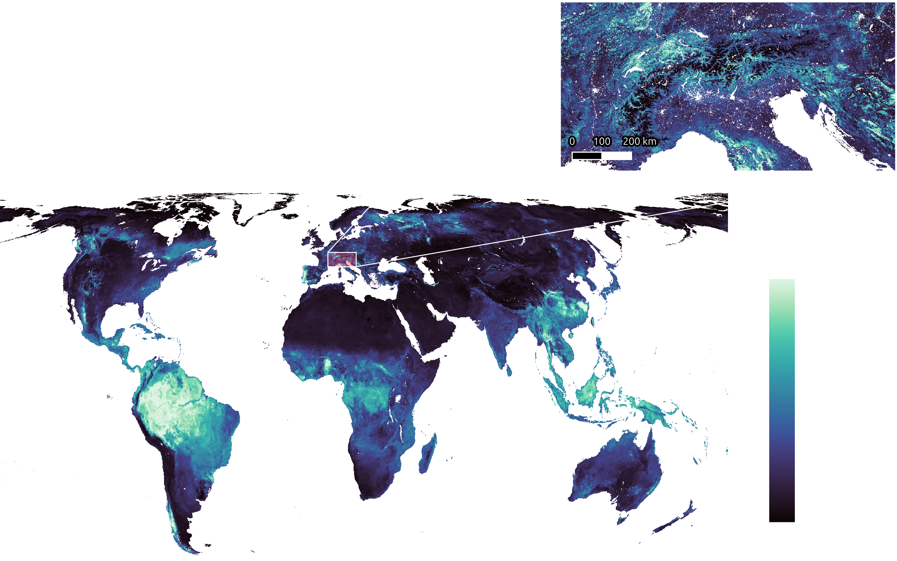

Global, high-resolution plant trait maps combining citizen science and Earth observation
Daniel Lusk1, Sophie Wolf2, Daria Svidzinska2, Jens Kattge3,4, Francesco Maria Sabatini3,5,6, Álvaro Moreno Martínez7, Teja Kattenborn1
1 Sensor-based Geoinformatics, University of Freiburg, Germany
2 Remote Sensing Centre for Earth System Research, Leipzig University, Germany
3 German Centre for Integrative Biodiversity Research (iDiv) Halle-Jena-Leipzig, Germany
4 Max Planck Institute for Biogeochemistry, Germany
5 Department of Biological, Geological and Environmental Sciences (BiGeA), Alma Mater Studiorum University of Bologna, Italy
6 Institute of Biology/Geobotany and Botanical Garden, Martin Luther University Halle-Wittenberg, Germany
7 Image Signal Processing Group, Image Processing Laboratory (IPL), University of Valencia, Spain
33 functional traits at 1 km resolution
Abstract
The acceleration of global environmental change underscores the pressing need for a comprehensive understanding of how the biosphere interacts with its environment. To reliably examine these connections across diverse ecosystems, having spatially continuous data on plant functional traits is imperative. Trait databases such as TRY boast an extensive repository of plant trait measurements for thousands of species for individual locations. Previous approaches have attempted to spatially extrapolate such local trait measurements using environmental predictors or Earth observation data. Thereby, a common challenge is the scarcity of the original data, which leads to significant uncertainty in the extrapolations in data-scarce regions. Meanwhile, rapidly growing citizen science initiatives, such as iNaturalist or Pl@ntNet, have generated millions of ground-level species observations across the globe. Despite being noisy and opportunistically sampled, previous studies have shown that integrating such citizen science species observations with large functional trait databases enables the creation of global trait maps with unprecedented accuracy. However, aggregating citizen science data only allows for the generation of sparse and relatively coarse trait maps, e.g. at 0.2 to 2.0 degree spatial resolution.
Here, by using such citizen science data in concert with high-resolution Earth observation data, we extend this approach to model the relationships between functional traits and their structural and environmental determinants, providing global trait maps with globally continuous coverage and unprecedented spatial resolution (up to 1km). This fusion of ground-based citizen science and continuous satellite data allows us not only to map more 20 ecologically relevant traits but also to derive crucial functional diversity metrics at a global scale. These metrics—such as functional richness and evenness—provide new opportunities to explore the role of functional diversity in ecosystem stability, particularly in response to climate extremes associated with climate change. Our approach presents a scalable framework to advance understanding of plant functional traits and diversity, opening the door to new insights on how ecosystems may respond to an increasingly variable and extreme climate.
Methodology
Crowd-sourced vegetation occurrences from GBIF (which species observations from contains popular citizen science initiatives such as iNaturalist and Pl@ntNet, among many others) and curated plot-level species abundances from sPlot were matched with mean species trait values from the TRY Trait Database. Ensemble gradient-boosting models were trained for each trait as a function of environmental and Earth observation data.<br><br>The Earth observation data used in this experiment were: MODIS surface reflectance, SoilGrids2.0 soil properties, WorldClim Bioclimatic variables, and the Vegetation Optical Depth Climate Archive (VODCA).

Usage Notes
Here you can find maps of 33 plant functional traits as defined in the TRY Plant Trait Database with a resolution of 0.01°°(~1.1 km at the equator) and a global extent. The maps are extrapolations by ensemble models trained on ~40 million citizen science species observations from the Global Biodiversity Information Facility as well as scientific species abundances recorded in the sPlot database in combination with TRY trait data and global Earth observation datasets.
The current iteration of the trait maps includes traits sourced from plants across three major plant functional types (PFTs): shrubs, trees, and grasses. PFT-specific maps are in progress and will be available in the future.
For questions, please contact Daniel Lusk (daniel.lusk [at] geosense.uni-freiburg.de).
Trait descriptions
| TRY Trait ID | Short name | Long name | Units |
|---|---|---|---|
| X27 | Seed length | Seed length | mm |
| X11 | SLA | Leaf area per leaf dry mass (specific leaf area, SLA or 1/LMA): undefined if petiole is included or excluded) | m² kg⁻¹ |
| X6 | RRD | Root rooting depth | m |
| X50 | Leaf N (area) | Leaf nitrogen (N) content per leaf area | g m⁻² |
| X237 | Dispersal unit length | Dispersal unit length | mm |
| X4 | SSD | Stem specific density (SSD) or wood density (stem dry mass per stem fresh volume) | g cm³ |
| X46 | Leaf thickness | Leaf thickness | mm |
| X78 | Leaf delta 15N | Leaf nitrogen (N) isotope signature (delta 15N) | ppm |
| X15 | Leaf P | Leaf phosphorus (P) content per leaf dry mass | mg g⁻¹ |
| X169 | Stem conduit density | Stem conduit density (vessels and tracheids) | mm⁻² |
| X47 | LDMC | Leaf dry mass per leaf fresh mass (leaf dry matter content, LDMC) | g g⁻¹ |
| X18 | Plant height | Plant height | m |
| X224 | Chromosome cDNA content | Species genotype: chromosome cDNA content | Gb |
| X145 | Leaf width | Leaf width | mm |
| X14 | Leaf N (mass) | Leaf nitrogen (N) content per leaf dry mass | mg g⁻¹ |
| X55 | Leaf dry mass | Leaf dry mass (single leaf) | g |
| X3120 | Leaf water content | Leaf water content per leaf dry mass (not saturated) | g g⁻¹ |
| X26 | Seed mass | Seed dry mass | mg |
| X3112 | Leaf area | Leaf area (in case of compound leaves: leaf, undefined if petiole in- or excluded) | mm² |
| X1080 | SRL | Root length per root dry mass (specific root length, SRL) | cm g |
| X3114 | Leaf area | Leaf area (in case of compound leaves: undefined if leaf or leaflet, undefined if petiole is in- or excluded) | mm² |
| X13 | Leaf C | Leaf carbon (C) content per leaf dry mass | mg g⁻¹ |
| X163 | Leaf fresh mass | Leaf fresh mass | g |
| X21 | Stem diameter | Stem diameter | m |
| X146 | Leaf C/N ratio | Leaf carbon/nitrogen (C/N) ratio | g g⁻¹ |
| X3113 | Leaf area | Leaf area (in case of compound leaves: leaflet, undefined if petiole is in- or excluded) | mm² |
| X144 | Leaf length | Leaf length | mm |
| X281 | Stem conduit diameter | Stem conduit diameter (vessels, tracheids) | µm |
| X282 | Conduit element length | Wood vessel element length; stem conduit (vessel and tracheids) element length | µm |
| X223 | Chromosome number | Species genotype: chromosome number | - |
| X289 | Wood fiber lengths | Wood fiber lengths | µm |
| X95 | Seed germination rate | Seed germination rate (germination efficiency) | days |
| X138 | Seed number | Seed number per reproduction unit | - |